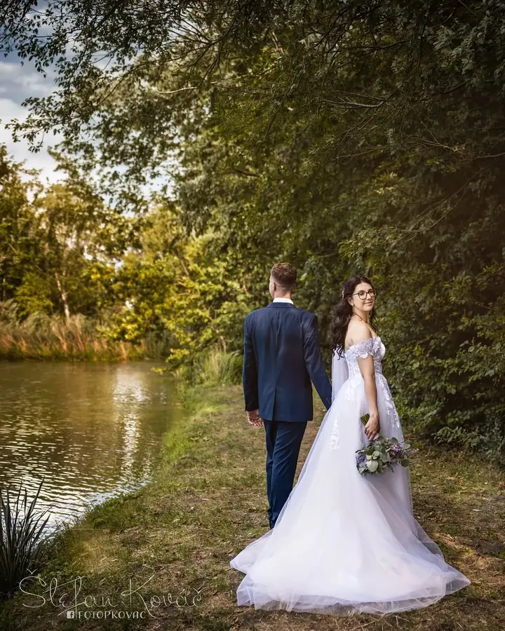
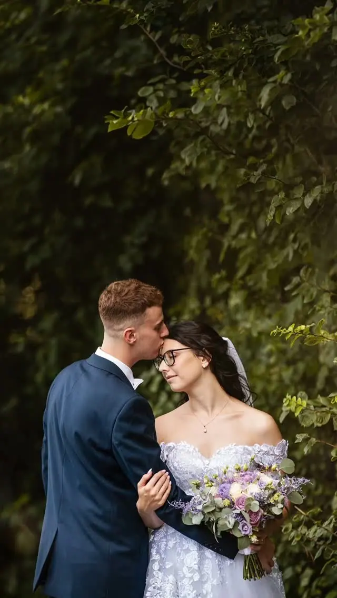
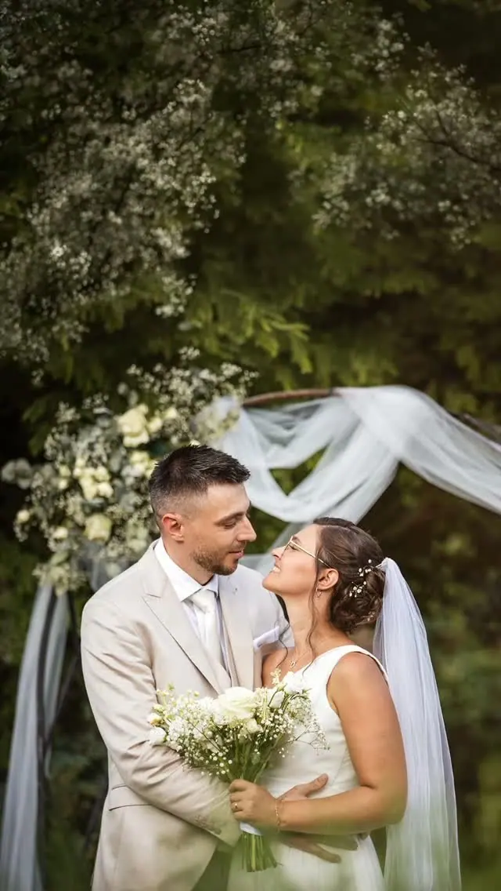
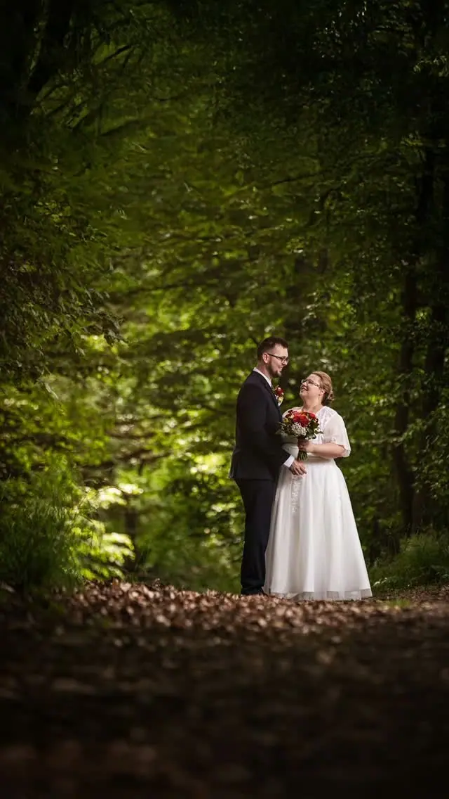

jedna
Svatební focení
Svatby fotím ve stylu reportáže, aby na fotkách zůstaly přirozené okamžiky a emoce. Můžete si vybrat balíček jen na obřad, nebo i s aranžovaným focením a zahájením hostiny s prvním tancem a dortem.

Svatební a rodinný fotograf · Znojmo, celá Morava, Česko

Jmenuji se Štefan Kováč a ve Znojmě mám fotoateliér Fotop, jen kousek nad kostelem Nalezení svatého Kříže. Nejraději fotím svatby ve stylu reportáže a rodiny v ateliéru, venku nebo u vás doma. Fotky umím nejen vyfotit, ale i vyrobit.
Více o mně
Co fotím
jedna
Svatby fotím ve stylu reportáže, aby na fotkách zůstaly přirozené okamžiky a emoce. Můžete si vybrat balíček jen na obřad, nebo i s aranžovaným focením a zahájením hostiny s prvním tancem a dortem.
dvě
Rodinné fotky fotím v ateliéru, venku nebo třeba u vás doma. Jsou to vzpomínky na chvíle, kdy jsme jako rodiče byli pro naše děti celý svět a naopak.
tři
Fotíme ve fotoateliéru v centru Znojma nebo venku. Na závěr spolu vybereme nejlepší záběry a vybrané fotky dostanete i vytištěné.
Produktové fotky dělám v ateliéru i u vás, světla a ateliérové vybavení přivezu s sebou. Fotím také akce, oslavy a maturitní plesy.
Zastavme spolu čas na další stovky let

Za objektivem
Fotoateliér a prodejnu Fotop najdete v centru královského města Znojma na Horní České ulici. Fotím tu rodiny, portréty i produkty a hotové fotky vám rovnou vytisknu, protože k fotografii pro mě patří i to, abyste ji mohli držet v ruce.
Na svatbách fotím reportážně a zachycuji přirozené okamžiky a emoce. Moje práce ale začíná dřív: nejdřív spolu naplánujeme celý den, aby na fotkách nechybělo nic, co je pro vás důležité.
Fotím na Znojemsku, po celé Moravě i kdekoliv v Česku. Jsem flexibilní, rád se přizpůsobím vašim představám a přijedu za vámi tam, kde se berete.
Štefan
Napište mi, kdy a kde se berete a co si od focení představujete. Připravím vám cenovou nabídku podle vašich požadavků.
Společně projdeme celý svatební den, aby bylo zachyceno všechno, co je pro vás důležité.
Fotím ve stylu reportáže, tedy přirozené okamžiky a emoce. Podle balíčku přidáme skupinové fotky a aranžované focení v okolí obřadu.
Upravené a retušované fotky dostanete v soukromé zabezpečené online galerii. Po domluvě je máte i na nosiči nebo vytištěné.
Portfolio
Otázky
Základní balíček jen na obřad začíná na 3 500 Kč, s aranžovaným focením na 5 000 Kč a se zahájením hostiny na 7 500 Kč. Balíčky rád upravím podle vašich potřeb.
Ano, fotím po celé Moravě i po celé České republice. Cestovné po okrese Znojmo je v ceně balíčku.
V soukromé zabezpečené online galerii, kde si je můžete prohlédnout, stáhnout a sdílet. Přístup máte jen vy a ti, komu ho dáte, a po domluvě dostanete fotky i na nosiči.
Krátké focení v ateliéru do 30 minut s pěti finálními záběry stojí 800 Kč. Hodinové focení s deseti záběry vyjde na 1 600 Kč v ateliéru a 2 000 Kč venku. Vybrané fotky dostanete i vytištěné a termín je potřeba předem objednat.
Napište pár vět o tom, co si představujete. fotop@fotop.cz